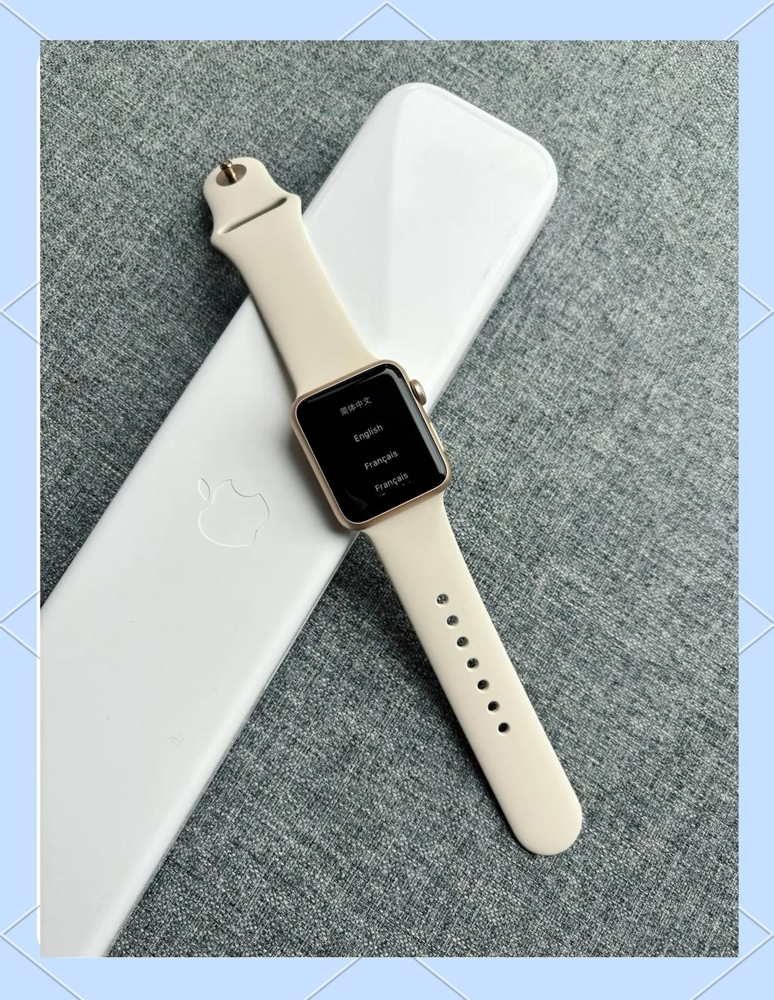

苹果 Apple Watch（初代）

苹果首款智能手表，重新定义了腕上通知与腕上支付。
客观评测
初代 Apple Watch 采用 1.5/1.65 英寸 Retina OLED 屏，蓝宝石或 Ion-X 玻璃覆盖，搭载 S1 封装芯片。实测界面滑动流畅但第三方应用加载缓慢，光学心率静止时较准、运动时偶有漂移，18 小时标称续航在中度使用下约一至一点五天。IPX7 只防泼溅，蓝牙 4.0、Wi-Fi、NFC 齐备，表带接口通用，2688 元起覆盖铝合金、不锈钢与 Edition 三个档次。
主观点评
它是那种第一次戴上就明白苹果意图的产品：短信、微信、来电都不用再掏手机，手腕轻震两下，信息已经看完。不锈钢配米兰尼斯表带的质感至今不落伍，只是每天睡前都要记得给它充电。作为苹果生态的新入口，它把通知、支付和运动记录重新编排进日常生活，也奠定了此后十年智能手表的形态范式。
优点与不足
- 通知、日程、信息一抬腕直达，腕上信息中心名副其实
- Digital Crown 与 Force Touch 交互精致，表带生态丰富
- Apple Pay 与震动触感通知开创了全新的使用习惯
- 一天一充，续航压力让睡眠监测几乎无法使用
- 初代 S1 芯片响应偏慢，App 启动明显卡顿
- 必须搭配 iPhone 使用，价格与门槛都不低
参数规格
| 屏幕 | 1.5/1.65 英寸 Retina OLED，蓝宝石或 Ion-X 玻璃 |
|---|---|
| 分辨率 | 38mm 版 272×340，42mm 版 312×390 |
| 处理器 | Apple S1 SiP 封装芯片 |
| 传感器 | 光学心率、加速度计、陀螺仪、环境光传感器 |
| 防水 | IPX7 防泼溅（不建议浸泡） |
| 电池 | 18 小时典型续航，磁吸式充电 |
| 系统 | watchOS 1.0，可升级至 watchOS 4.x |
| 兼容性 | 需搭配 iPhone 5 及以上，iOS 8.2 起 |
| 连接 | 蓝牙 4.0、Wi-Fi、NFC（Apple Pay） |
| 重量 | 38mm 铝合金版约 25g（不含表带） |
| 表带 | 运动型、皮质、链式等多种可换表带 |